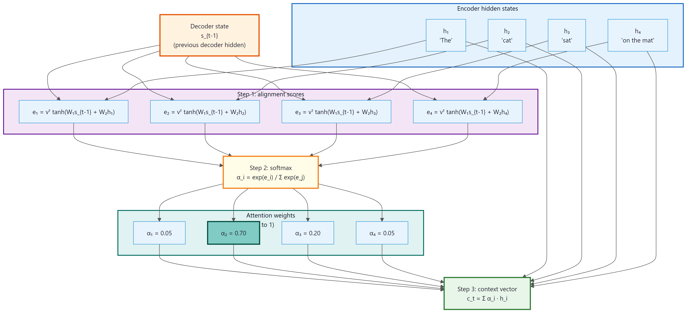
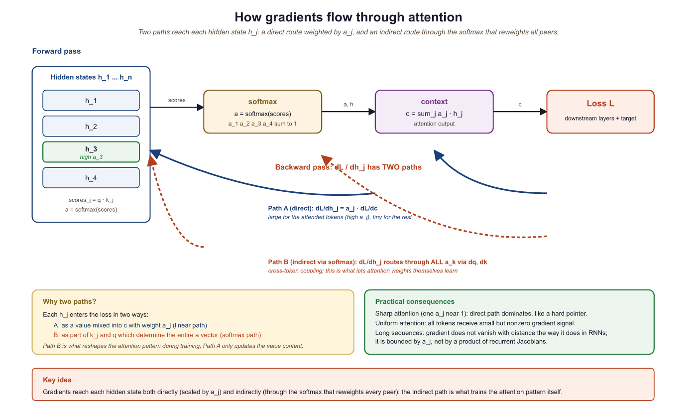

I finally learned to pay attention, and now I can't stop staring at every token in the sequence. My therapist calls it hypervigilance; Bahdanau calls it alignment.
Attn, Hypervigilant AI Agent
Why attention changed everything. In Section 2.1, we saw that the encoder-decoder architecture forces the entire source sentence through a single fixed-size bottleneck vector. Attention eliminates this bottleneck by allowing the decoder to dynamically "look back" at every encoder hidden state at every generation step. Instead of asking "what does the whole sentence mean?", the decoder can ask "which parts of the sentence are relevant right now?" This single idea, introduced in 2014 by Bahdanau et al., improved machine translation dramatically and became the foundational building block of the Transformer architecture (Chapter 3) that powers GPT, BERT, and every modern LLM.
Prerequisites
This section builds directly on the encoder-decoder architecture and information bottleneck problem from Section 2.1. Understanding RNN hidden states and the seq2seq framework is essential. The intuitive introduction to attention here prepares you for the formal Q/K/V treatment in Section 2.3 and its full application in the Transformer (layer normalization).
2.2.1 The "Where to Look" Intuition
Scaled dot-product attention is mathematically equivalent to memory retrieval in a continuous Hopfield network (Ramsauer et al., 2020). The keys are stored memory patterns; the query is a noisy cue; the softmax selects the closest match. This framing makes two things predictable. First, retrieval degrades when multiple keys are similar to the query, producing "blended" value outputs rather than a clean lookup. Second, the softmax temperature acts as a signal-to-noise knob: lower temperature sharpens retrieval; higher temperature averages across similar memories. Both effects appear measurably in production attention heatmaps.
Consider a human translator converting an English sentence to French. They do not read the entire English sentence, memorize it as a single compressed thought, and then produce the French sentence from memory. Instead, they glance back at specific parts of the source sentence as they write each word of the translation. When writing the French verb, they look at the English verb. When writing the French adjective, they look at the English adjective (which might be in a different position due to word order differences between the two languages).
Attention gives neural networks this same ability. At each decoder step, the model computes a set of attention weights over all encoder positions. These weights determine how much "focus" to place on each source token. The model then takes a weighted sum of the encoder hidden states to produce a context vector that is specific to the current decoding step.
Crucially, these weights are not hardcoded. They are computed dynamically based on the decoder's current state and each encoder state. Different decoder steps attend to different parts of the source, creating a soft, differentiable alignment between source and target. Understanding how attention weights are interpreted remains an active research area, as discussed in Chapter 10: Interpretability.
Think of attention as a differentiable search engine. The decoder issues a "query" (what am I looking for?), the encoder positions are the "documents," and the attention weights are the relevance scores. Unlike a traditional search engine that returns one best match, attention returns a weighted blend of all documents, proportional to their relevance. This "soft" retrieval is what makes attention end-to-end trainable with gradient descent.
2.2.2 Bahdanau Additive Attention
The first attention mechanism for seq2seq, proposed by Bahdanau, Cho, and Bengio (2014), uses a small feedforward network (often called an alignment model) to compute the compatibility between the decoder state and each encoder state.
The Computation
Let $s_{i}$ be the decoder hidden state at step $i$, and let $h_{j}$ be the encoder hidden state at position $j$. Bahdanau attention computes:
These energy scores are normalized via softmax to produce attention weights that sum to one:
The context vector is then the weighted sum of encoder hidden states:
To make this concrete, consider a decoder attending to four source tokens with energy scores [0.2, 2.8, 0.1, 1.5]. The softmax converts these to weights, and the weighted sum produces a context vector dominated by the highest-scoring position:
# Numeric example: Bahdanau attention on 4 source tokens
import torch, torch.nn.functional as F
scores = torch.tensor([0.2, 2.8, 0.1, 1.5])
weights = F.softmax(scores, dim=0)
print(f"Scores: {scores.tolist()}")
print(f"Weights: {weights.tolist()}")
# Weights: [0.049, 0.660, 0.045, 0.246] (sum = 1.0)
# Weighted sum of 4 encoder vectors (dim=3 for brevity)
h = torch.tensor([[1.0, 0.0, 0.0], # h1
[0.0, 1.0, 0.0], # h2
[0.0, 0.0, 1.0], # h3
[0.5, 0.5, 0.0]]) # h4
context = weights @ h
print(f"Context: {context.tolist()}")
# Context: [0.172, 0.783, 0.045] (dominated by h2, weight=0.66)Here is what each piece does:
- Score function $e_{ij}$: Projects both the decoder state and encoder state into a common space, adds them, applies tanh, then reduces to a scalar with $v$. This is called "additive" attention because the two projections are added together.
- Softmax normalization: Converts raw scores into a probability distribution over source positions. The weights $\alpha _{ij}$ sum to 1 and are all non-negative.
- Weighted sum: Combines encoder states according to the attention weights, producing a context vector tailored to the current decoding step.

normalized via softmax to produce attention weights, then combined into a context vector that the decoder consumesAttention as Soft Alignment
In traditional machine translation, an alignment specifies which source word(s) correspond to each target word. Classic statistical MT systems learned hard alignments (each target word aligns to exactly one or a few source words). Attention produces a soft alignment: every target word is connected to every source word, but with varying strength.
This soft alignment has several advantages. It can handle one-to-many and many-to-one relationships naturally. It is fully differentiable, allowing end-to-end training with backpropagation. And it provides interpretability: by visualizing the attention weights as a matrix (source positions on one axis, target positions on the other), we get an alignment map that shows which source words the model "looked at" when generating each target word.
2.2.3 Luong Dot-Product Attention
Shortly after Bahdanau's work, Luong et al. (2015) proposed several alternative score functions. The most widely used is dot-product attention, which replaces the feedforward network with a simple dot product:
Luong also proposed a "general" variant that inserts a learnable matrix:
| Variant | Score Function | Parameters | Complexity |
|---|---|---|---|
| Bahdanau (additive) | vT tanh($W_{1}$s + $W_{2}$h) | O(d²) | Two projections + tanh + dot |
| Luong (dot) | sTh | 0 | Single dot product |
| Luong (general) | sTWh | O(d²) | One projection + dot |
The dot-product score is computationally cheaper and can be computed as a single matrix multiplication across all source positions simultaneously. This efficiency advantage becomes critical as we scale attention to the Transformer architecture in Section 2.3. However, note that dot-product attention requires the decoder and encoder states to have the same dimensionality, while additive attention can handle different sizes through its projection matrices.
2.2.4 Attention as a Differentiable Dictionary Lookup
The number of papers with "attention" in the title published since 2017 is itself worthy of some attention filtering. The original Bahdanau attention paper (2014) has over 30,000 citations, making it one of the most influential ideas in the history of deep learning.
There is a powerful analogy that helps unify all forms of attention: think of it as a soft dictionary lookup.
In a traditional Python dictionary, you provide a key and retrieve the exact matching value. If the key is not present, you get nothing. Attention works similarly but in a "soft" way:
- Query: What you are looking for (the decoder state $s_{i}$)
- Keys: What you compare against (the encoder states $h_{j}$)
- Values: What you retrieve (also the encoder states $h_{j}$ in Bahdanau/Luong)
Instead of exact matching, the query is compared against all keys simultaneously using a similarity function. The result is not a single value but a weighted combination of all values, where the weights reflect how well each key matches the query.
In Bahdanau and Luong attention, the keys and values are the same (both are encoder hidden states). The Transformer generalizes this by using separate linear projections to create distinct key and value representations from the same source, which is much more expressive. We will formalize this query/key/value framework in Section 2.3.
2.2.5 Implementing Attention from Scratch
Let us build both Bahdanau and Luong attention in PyTorch (Section 0.3), step by step.
# Bahdanau (additive) attention: project decoder state and encoder outputs
# through a shared MLP, then softmax over positions to get alignment weights.
import torch
import torch.nn as nn
import torch.nn.functional as F
class BahdanauAttention(nn.Module):
"""Additive (Bahdanau) attention mechanism."""
def __init__(self, enc_dim, dec_dim, attn_dim):
super().__init__()
self.W1 = nn.Linear(dec_dim, attn_dim, bias=False)
self.W2 = nn.Linear(enc_dim, attn_dim, bias=False)
self.v = nn.Linear(attn_dim, 1, bias=False)
def forward(self, decoder_state, encoder_outputs):
"""
decoder_state: (batch, dec_dim)
encoder_outputs: (batch, src_len, enc_dim)
Returns: context (batch, enc_dim), weights (batch, src_len)
"""
# Expand decoder state to match encoder sequence length
dec_proj = self.W1(decoder_state).unsqueeze(1) # (batch, 1, attn_dim)
enc_proj = self.W2(encoder_outputs) # (batch, src_len, attn_dim)
# Additive scoring: v^T tanh(W1*s + W2*h)
scores = self.v(torch.tanh(dec_proj + enc_proj)) # (batch, src_len, 1)
scores = scores.squeeze(-1) # (batch, src_len)
# Normalize to get attention weights
weights = F.softmax(scores, dim=-1) # (batch, src_len)
# Weighted sum of encoder outputs
context = torch.bmm(weights.unsqueeze(1), # (batch, 1, src_len)
encoder_outputs) # x (batch, src_len, enc_dim)
context = context.squeeze(1) # (batch, enc_dim)
return context, weights
# Test it
attn = BahdanauAttention(enc_dim=128, dec_dim=128, attn_dim=64)
enc_out = torch.randn(2, 6, 128) # batch=2, 6 source tokens
dec_s = torch.randn(2, 128) # decoder state
ctx, wts = attn(dec_s, enc_out)
print(f"Context shape: {ctx.shape}")
print(f"Weights shape: {wts.shape}")
print(f"Weights sum: {wts[0].sum().item():.4f}")
print(f"Weights[0]: {wts[0].detach().numpy().round(3)}")
The weights sum to 1 (as guaranteed by softmax) and the model has learned to concentrate most of its attention on positions 1 and 4 for this particular query. Now the Luong dot-product variant:
import torch.nn.functional as F
from torch import nn
import torch
# Luong (dot-product) attention: score = decoder_state @ encoder_outputs^T.
# Simpler and faster than Bahdanau because it skips the MLP projection.
class LuongDotAttention(nn.Module):
"""Dot-product (Luong) attention mechanism."""
# Forward pass: define computation graph
def forward(self, decoder_state, encoder_outputs):
"""
decoder_state: (batch, dim)
encoder_outputs: (batch, src_len, dim) , same dim required!
"""
# Dot product: s^T h for each encoder position
scores = torch.bmm(
encoder_outputs, # (batch, src_len, dim)
decoder_state.unsqueeze(-1) # (batch, dim, 1)
).squeeze(-1) # (batch, src_len)
# Convert scores to attention weights (probabilities summing to 1)
weights = F.softmax(scores, dim=-1)
context = torch.bmm(weights.unsqueeze(1), encoder_outputs).squeeze(1)
return context, weights
# Compare both mechanisms
luong_attn = LuongDotAttention()
ctx_l, wts_l = luong_attn(dec_s, enc_out)
print(f"Bahdanau weights: {wts[0].detach().numpy().round(3)}")
print(f"Luong weights: {wts_l[0].detach().numpy().round(3)}")
print(f"Both produce context of shape: {ctx_l.shape}")Notice that Luong attention produces sharper weights (more concentrated on a single position). This is because the raw dot product can produce larger magnitude scores than the bounded tanh in Bahdanau attention, leading to more peaked softmax outputs.
Understanding how attention scores are computed is only half the story. To appreciate why attention works so well as a trainable mechanism, we need to see how gradients flow through the attention computation during learning.
2.2.6 Backpropagation Through Attention
Attention is fully differentiable, which means gradients flow through it naturally during backpropagation. The key takeaway: positions that receive high attention weights also receive strong gradient signals, creating a virtuous cycle where the model learns to attend to the right places.
Advanced Deep Dive (Optional): Matrix calculus of gradient flow through attention
The Jacobian of Softmax
The attention weights are computed as $\alpha = \operatorname{softmax}(e)$. The Jacobian of softmax with respect to its input is:
where $\delta _{ij}$ is the Kronecker delta (1 if i = j, 0 otherwise). This has an important consequence: increasing score $e_{j}$ increases weight $\alpha _{j}$ but decreases all other weights (since they must sum to 1). This competitive dynamic is what makes attention selective.
Gradient Flow Through the Context Vector
The context vector is $c = \sum _{j} \alpha _{j} h_{j}$. The gradient of the loss $L$ with respect to encoder state $h_{j}$ has two paths:
- Direct path: $\partial L/ \partial c \cdot \alpha _{j}$. The gradient flows directly through the weighted sum, scaled by the attention weight. Positions with high attention receive more gradient.
- Indirect path: Through the score function. Changing $h_{j}$ changes the scores, which changes the weights, which changes the context. This path allows the network to learn better scoring functions.
The direct path is analogous to a Section 4.1: gradient flows directly from the output back to the relevant encoder states, scaled by the attention weight. This means that positions the model attends to receive strong gradient signals, making training much more effective than in a vanilla seq2seq model where gradients must traverse the entire encoder recurrence.
Let us verify this gradient flow empirically:
# Compare Bahdanau vs Luong attention: identical encoder outputs,
# different scoring functions. Check that gradients flow to all positions.
import torch
import torch.nn.functional as F
# Create encoder outputs with gradient tracking
enc = torch.randn(1, 5, 8, requires_grad=True) # 5 positions, dim 8
query = torch.randn(1, 8)
# Compute Luong dot-product attention
scores = torch.bmm(enc, query.unsqueeze(-1)).squeeze(-1)
weights = F.softmax(scores, dim=-1)
context = torch.bmm(weights.unsqueeze(1), enc).squeeze(1)
# Compute a scalar loss and backpropagate
loss = context.sum()
loss.backward()
print("Attention weights:", weights[0].detach().numpy().round(4))
print("Gradient norms per position:")
for j in range(5):
grad_norm = enc.grad[0, j].norm().item()
print(f" Position {j}: weight={weights[0,j]:.4f}, grad_norm={grad_norm:.4f}")Observe the strong correlation: positions with higher attention weights receive proportionally larger gradients. Position 1, which has 78% of the attention weight, receives by far the largest gradient. This is the mechanism by which attention guides learning: the model receives the strongest training signal from the source positions it deems most relevant.

2.2.7 Integrating Attention into Seq2Seq
Now let us see how attention fits into a complete encoder-decoder model. The decoder uses the context vector (alongside its hidden state) to make predictions at each step:
# Full attention decoder: at each step, attend over encoder outputs,
# concatenate the context vector with the embedding, and predict the next token.
import torch
import torch.nn as nn
import torch.nn.functional as F
class AttentionDecoder(nn.Module):
"""Decoder with Bahdanau attention."""
def __init__(self, vocab_size, emb_dim, hidden_dim, enc_dim):
super().__init__()
self.embedding = nn.Embedding(vocab_size, emb_dim)
self.rnn = nn.GRU(emb_dim + enc_dim, hidden_dim, batch_first=True)
self.attention = BahdanauAttention(enc_dim, hidden_dim, attn_dim=64)
self.fc = nn.Linear(hidden_dim + enc_dim, vocab_size)
def forward_step(self, token, hidden, encoder_outputs):
"""One decoding step with attention."""
# Compute attention over encoder outputs
context, weights = self.attention(
hidden.squeeze(0), # (batch, hidden_dim)
encoder_outputs # (batch, src_len, enc_dim)
)
# Embed current token and concatenate with context
emb = self.embedding(token) # (batch, 1, emb_dim)
rnn_input = torch.cat([emb, context.unsqueeze(1)], dim=-1)
# RNN step
output, hidden = self.rnn(rnn_input, hidden) # output: (batch, 1, hidden)
# Combine RNN output with context for prediction
combined = torch.cat([output.squeeze(1), context], dim=-1)
logits = self.fc(combined)
return logits, hidden, weights
# Demo: decode 4 steps with attention
dec = AttentionDecoder(vocab_size=6000, emb_dim=64, hidden_dim=128, enc_dim=128)
enc_outputs = torch.randn(1, 8, 128) # 8 source tokens
h = torch.randn(1, 1, 128) # initial decoder hidden
tok = torch.tensor([[1]]) # <SOS>
print("Attention patterns during decoding:")
for step in range(4):
logits, h, weights = dec.forward_step(tok, h, enc_outputs)
tok = logits.argmax(dim=-1, keepdim=True)
w = weights[0].detach().numpy()
peak = w.argmax()
print(f" Step {step}: peak attention at source pos {peak} ({w[peak]:.2%})")
Each decoding step focuses on a different source position, demonstrating the dynamic nature of attention. The decoder is no longer stuck with a single context vector; it constructs a fresh, step-specific context at every position.
Bahdanau attention was originally called the "alignment model" because the attention weights directly correspond to soft word alignments in translation. This connection to alignment is why the score function parameters are sometimes denoted with alignment-related variable names in the literature. Keep in mind that when the Transformer paper (Vaswani et al., 2017) uses the term "attention," it refers to the same fundamental concept but in a more general query/key/value framework that we develop in Section 2.3.
Neural attention mirrors the psychological concept of selective attention studied by cognitive scientists since Broadbent's filter model (1958) and Treisman's attenuation theory (1964). The human brain cannot process all sensory inputs with equal fidelity, so it allocates processing resources to the most relevant stimuli. Similarly, the softmax-weighted combination in attention is a differentiable resource allocation mechanism: the model spends its "representational budget" on the source positions most relevant to the current decision. This parallel runs deeper than analogy. Both systems face the same fundamental constraint: bounded computational resources must be distributed across an input that exceeds processing capacity. The emergence of sparse, interpretable attention patterns in trained models suggests that the mathematical structure of optimal information routing may be universal, arising independently in biological and artificial systems facing the same bottleneck.
Consider translating the French sentence "Le chat noir dort sur le tapis" into English "The black cat sleeps on the mat." Without attention, the decoder must compress all source information into a single vector. With attention, when generating "cat," the decoder assigns high weight to "chat" (position 2); when generating "black," it focuses on "noir" (position 3). This word-by-word alignment emerges naturally from training, and the resulting attention matrices serve as useful debugging tools in production translation systems. Teams at Google Translate used attention visualizations to identify systematic errors, such as the model consistently mishandling negation in long sentences.
When attention outputs look wrong, plot the attention weight matrix as a heatmap. A well-trained attention layer should show clear diagonal or structured patterns. Uniform (flat) attention usually means the layer is not learning anything useful.
Attention efficiency remains a central research concern. Linear attention methods replace softmax with kernel functions to achieve O(n) complexity. Differential Transformer (Ye et al., 2024) computes attention as the difference between two softmax attention maps, reducing noise. Native sparse attention (NSA, DeepSeek, 2025) learns sparse patterns during pretraining. The relationship between attention and in-context learning is being formalized, with results showing that attention heads implement cross-entropy steps during inference.
- Attention eliminates the information bottleneck by allowing the decoder to access all encoder hidden states at every step, rather than relying on a single compressed vector.
- Bahdanau (additive) attention uses a learned feedforward network to score the compatibility between decoder and encoder states. It can handle different dimensionalities but is computationally heavier.
- Luong (dot-product) attention uses a simple dot product for scoring, which is faster and can be computed as a single matrix multiplication. It requires matching dimensions.
- Attention is a soft dictionary lookup: a query (decoder state) is compared against keys (encoder states) to produce weights that determine how to combine values (also encoder states).
- Gradients flow through attention via two paths: directly through the weighted sum (scaled by α) and indirectly through the score function. This creates shortcut gradient paths that improve training.
- Attention weights are interpretable, forming soft alignment matrices that reveal which source tokens influence each target token.
Show Answer
Show Answer
Show Answer
Show Answer
Show Answer
Exercises
A decoder produces state $s = [1, 0, 1]$. Three encoder hidden states are $h_{1} = [1, 0, 1]$, $h_{2} = [0, 1, 0]$, $h_{3} = [1, 1, 0]$. Compute (a) the dot-product attention scores, (b) the attention weights via softmax, and (c) the resulting context vector. Which encoder position dominates and why?
Answer Sketch
(a) Scores: $s \cdot h_{1} = 2$, $s \cdot h_{2} = 0$, $s \cdot h_{3} = 1$. (b) Softmax of [2, 0, 1]: exponentials are [7.389, 1.0, 2.718], sum = 11.107. Weights: $[0.665, 0.090, 0.245]$. (c) Context = 0.665 × [1,0,1] + 0.090 × [0,1,0] + 0.245 × [1,1,0] = [0.910, 0.335, 0.665]. Position 1 dominates because $h_{1}$ exactly matches the query direction, producing the largest dot product. The softmax exponential amplifies the gap: a score difference of 2 becomes a weight ratio of $e^{2} \approx 7.4$x.
You are designing a speech-to-text model where the encoder produces 1024-dim states (acoustic features) and the decoder produces 256-dim states (text features). (a) Which attention variant from this section can you use without modification, and which require an extra projection? (b) Estimate how the parameter counts of Bahdanau and Luong-general attention compare for these dimensions. (c) Which would you choose if memory budget is tight, and why?
Answer Sketch
(a) Luong dot-product cannot be used without modification because $s$ (256-dim) and $h$ (1024-dim) cannot be dotted together. Bahdanau handles this naturally because $W_{1}$ (256→64 say) and $W_{2}$ (1024→64) project both into a shared space. Luong-general inserts a 256x1024 matrix W. (b) Bahdanau with attn_dim=64: $256 \times 64 + 1024 \times 64 + 64 = 81{,}984$. Luong-general: $256 \times 1024 = 262{,}144$ parameters. (c) Bahdanau is ~3x smaller here. Counterintuitively, the "simpler-looking" Luong-general can have more parameters when dimensions are large and asymmetric. Always count parameters before choosing on stylistic grounds.
You train a Bahdanau attention seq2seq translator and inspect attention weights after training. Every decoder step shows nearly uniform attention (all weights close to 1/n) over the encoder positions. Diagnose two distinct root causes that could produce this symptom and propose one diagnostic experiment for each.
Answer Sketch
Cause 1: The score function is producing scores too close together (small magnitude before softmax). This often happens when $W_{1}$ and $W_{2}$ are initialized too small, or when the tanh saturates the energies near zero. Diagnostic: log the pre-softmax score variance per batch; if variance is < 0.01, the model is not differentiating positions. Fix: better initialization or remove tanh saturation by scaling. Cause 2: The encoder hidden states $h_{j}$ are nearly identical across positions because the encoder LSTM has collapsed to outputting the same state at every step (a known optimization failure called "encoder collapse," often caused by too-strong dropout or a too-small encoder). Diagnostic: compute pairwise cosine similarity of $h_{j}$; if median similarity > 0.95, encoder representations are degenerate. Fix: increase encoder capacity or reduce dropout. Both root causes produce identical attention symptoms but require opposite fixes.
The BahdanauAttention in Code Fragment 2.2.2 assumes all source positions are valid. In practice, batches contain padded sequences of different lengths. Modify the forward method to accept an additional mask argument of shape (batch, src_len) (with 1 for real tokens and 0 for padding) so that attention weights for padding positions are exactly zero after softmax.
Answer Sketch
The standard trick is to add a large negative number (e.g., -1e9) to scores at padding positions before the softmax. After softmax, $e^{-10^{9}} \approx 0$, so padded positions contribute nothing. Modified code: after computing scores = self.v(torch.tanh(dec_proj + enc_proj)).squeeze(-1), add scores = scores.masked_fill(mask == 0, -1e9). Then softmax as before. Two pitfalls: (a) using zero instead of -inf would not work, since softmax(0) is still positive; (b) masking after softmax and renormalizing also works but loses the gradient signal that teaches the model to ignore padded positions. The pre-softmax mask is preferred because it makes padding invisible to gradients.
Attention uses softmax to convert scores to weights. A naive alternative is L1 normalization: $\alpha _{j} = |e_{j}| / \sum_{k} |e_{k}|$. Give two reasons softmax is preferred. Then describe one situation where you might deliberately replace softmax with a different normalization.
Answer Sketch
Reasons for softmax: (1) Differentiability everywhere, including at zero; the absolute value in L1 is non-differentiable at zero, causing gradient issues. (2) Softmax produces a probability distribution with strong peaking behavior: small score differences become large weight differences, so the model can learn sharp focus. L1 would distribute weight more uniformly and lose decisiveness. Replacement scenarios: (a) Linear/kernel attention replaces softmax with a kernel feature map to achieve O(n) complexity at the cost of less peaking. (b) Sparsemax replaces softmax with a projection onto the simplex that gives exact zeros for irrelevant positions, useful for interpretability. (c) Top-k attention keeps only the k highest scores and zeros the rest before normalizing, useful for very long sequences where dense attention is too expensive.
Cho et al. (2014) showed BLEU degrades sharply for vanilla seq2seq beyond ~20 source tokens. Predict how the BLEU-vs-length curve changes when attention is added. Will the curve become flat? Slightly downward? Why? What new failure mode might still cause BLEU to drop on extremely long sequences (say, 500 tokens)?
Answer Sketch
With attention, the curve becomes much flatter because the bottleneck is removed: the decoder accesses all source positions at every step. Empirically, BLEU stays nearly constant up to roughly 60-80 tokens and then declines slowly. The new failure modes for very long sequences include: (1) Attention dilution: with 500 source positions, even a "focused" softmax distribution puts non-trivial mass on dozens of positions, blurring the signal. (2) Encoder LSTM degradation: even with attention, the encoder still uses a recurrent LSTM whose hidden states for early positions may have lower-quality representations. (3) Score function bias: the additive scoring network was trained on shorter sequences and may not generalize. The Transformer's later move to scaled dot-product attention partially addresses (1) and (2) by removing recurrence and re-scaling scores.
What's Next?
In the next section, Section 2.3: Scaled Dot-Product & Multi-Head Attention, we formalize attention into the scaled dot-product and multi-head variants used in modern Transformers.